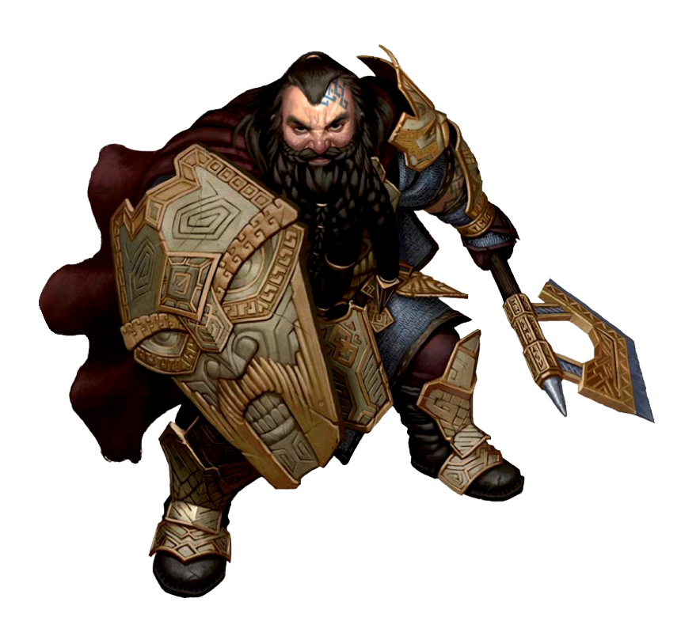
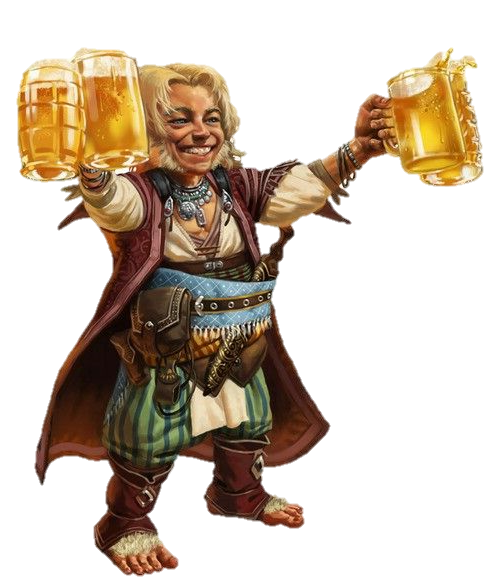
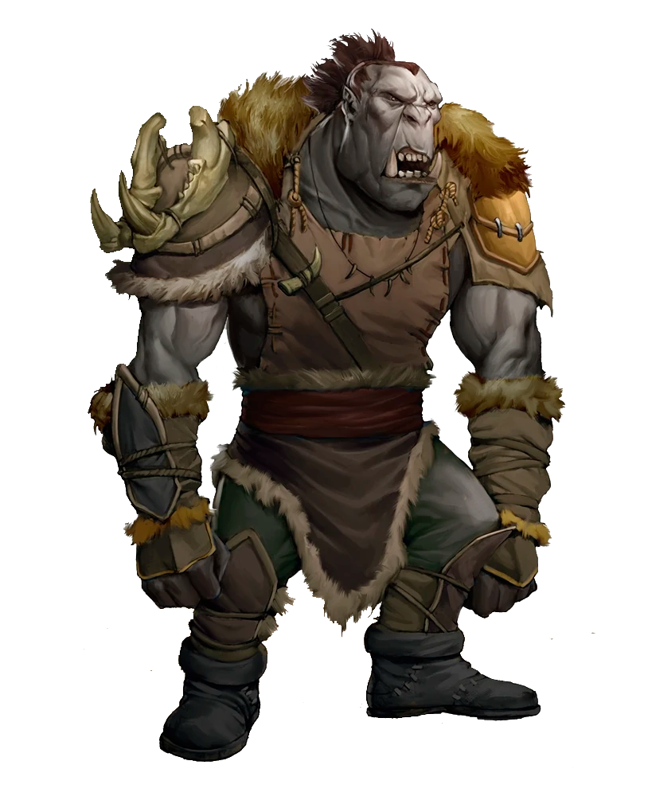
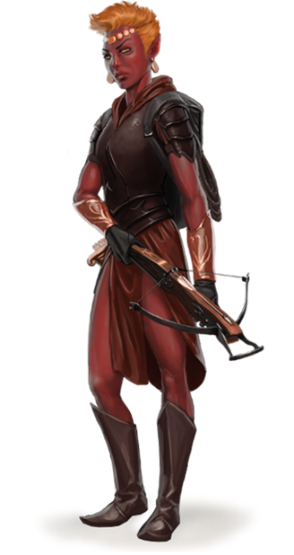
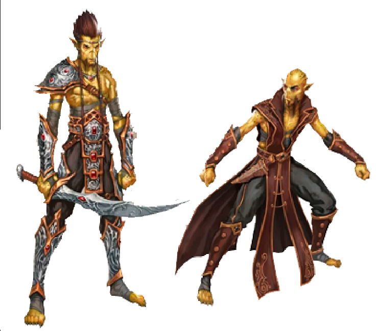
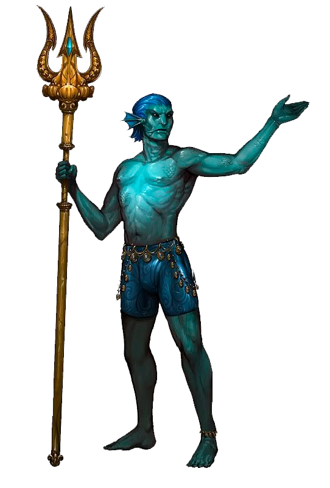
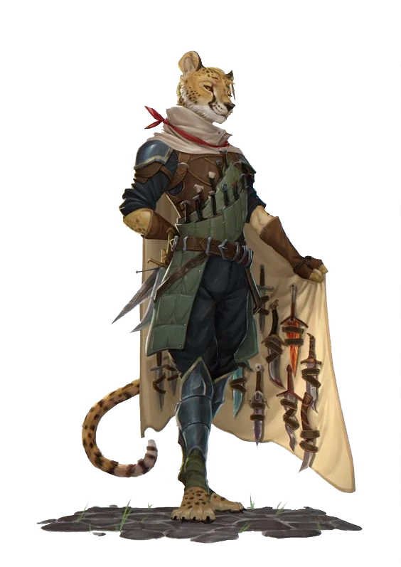
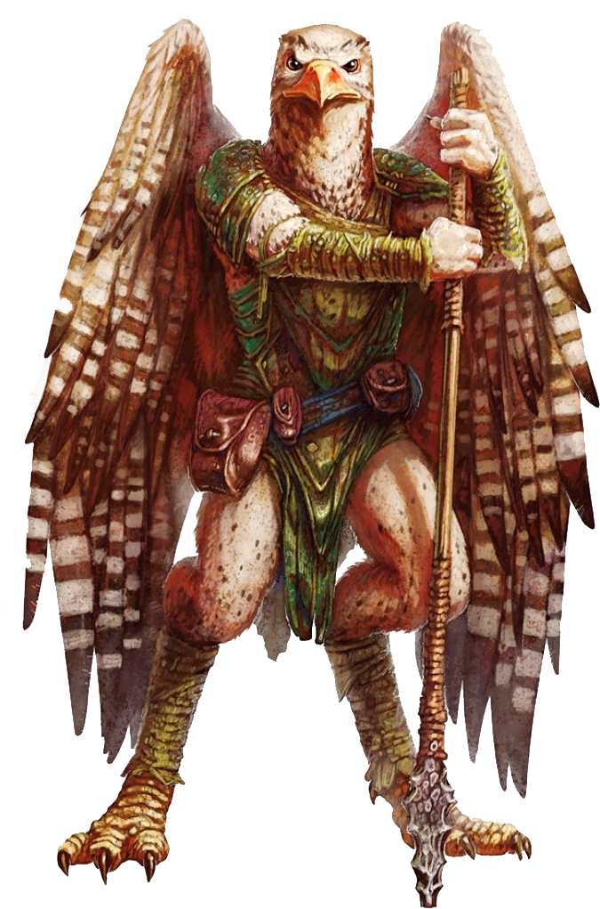

Humano

Os humanos são uma raça versátil e adaptável, conhecidos por sua diversidade e habilidades excepcionais. Sua aparência física varia amplamente, assim como suas culturas e tradições. Os humanos estão presentes em todas as partes do mundo de D&D e são capazes de se destacar em diversas classes e papéis.
Características Raciais:
- Aumento de Atributo: Escolha dois atributos diferentes para aumentar em 1 ponto cada um. Isso representa a adaptabilidade e diversidade dos humanos.
- Proficiência em Habilidade: Você ganha proficiência em uma habilidade de sua escolha, refletindo seu treinamento, experiência ou talento excepcional em uma área específica.
- Tradição Versátil: Você ganha um talento adicional de sua escolha no 1º nível. Isso permite que você se especialize em uma área específica ou adquira uma habilidade extra.
- Idiomas: Você é fluente em Comum, o idioma compartilhado pela maioria das raças no mundo. Além disso, você também pode falar e entender outros idiomas, dependendo da região em que cresceu e do seu histórico de vida.
- A altura média varia de 1,50 a 2,00 metros. O peso médio varia de 50 a 115 quilogramas.
Anão
Os anões são conhecidos por sua força, resistência e habilidades em trabalhos de metalurgia. Esses valorosos e robustos indivíduos possuem uma rica cultura e tradições forjadas nas profundezas das montanhas. Como anão, você terá vantagens únicas e atributos distintos.
Características Raciais:
- Aumento de Atributo: Sua Constituição aumenta em 2, refletindo sua resistência física e durabilidade.
- Visão no Escuro: Graças à sua visão apurada nas regiões subterrâneas, você enxerga no escuro a até 60 pés.
- Resistência Anã: Sua constituição robusta lhe confere resistência contra veneno e vantagem em testes de resistência contra veneno.
- Treinamento em Combate: Você possui proficiência nas armas de combate corpo a corpo marciais, como o machado de guerra e o martelo de guerra anão.
- Conhecimento de Pedra: Você tem proficiência na perícia de História relacionada a construções de pedra, como arquitetura, engenharia e história de fortalezas.
- Idioma: Você é fluente em Anão, uma língua robusta e cheia de sons guturais. Ela é conhecida por sua precisão e capacidade de descrever detalhes minuciosos. Além disso, você também fala Comum.
- A altura média varia de 1,22 a 1,37 metros. O peso médio varia de 54 a 90 quilogramas.
Elfo

Os elfos são uma raça graciosa e misteriosa, conhecidos por sua longevidade e afinidade natural com a magia. Sua beleza é lendária, assim como suas habilidades como arqueiros e magos. Como elfo, você terá vantagens únicas e atributos distintos.
Características Raciais:
- Aumento de Atributo: Sua Destreza aumenta em 2, representando sua agilidade e precisão.
- Visão no Escuro: Graças aos seus sentidos aguçados, você enxerga no escuro a até 60 pés.
- Ancestral Feérico: Você possui vantagem em testes de resistência contra encantamentos e magias não-necromânticas não-élficas.
- Transe Élfico: Em vez de dormir, você entra em um estado de transe meditativo por 4 horas. Isso permite que você descanse e recupere energia de forma mais rápida.
- Treinamento em Armas Élficas: Você possui proficiência com espadas curtas, espadas longas, arcos longos e arcos curtos.
- Idiomas: Você é fluente em Élfico, uma língua harmoniosa e melódica que reflete a beleza e a conexão dos elfos com a natureza. Além disso, você também fala Comum.
- A altura média varia de 1,52 a 1,82 metros. O peso médio varia de 40 a 72 quilogramas.
Halfling
Os halflings são uma raça diminuta e amigável, conhecidos por sua natureza alegre e espírito aventureiro. Apesar de seu tamanho pequeno, eles são ágeis e astutos, encontrando sua força na comunidade e na habilidade de evitar perigos. Como halfling, você trará consigo atributos e habilidades únicas.
Características Raciais:
- Aumento de Atributo: Sua Destreza aumenta em 2, representando sua agilidade e destreza física.
- Tamanho Pequeno: Você é considerado uma criatura de tamanho Pequeno, o que confere benefícios e limitações proporcionais a seu tamanho.
- Movimento Ágil: Seu deslocamento base é de 25 pés. Além disso, você pode mover-se através do espaço de qualquer criatura de tamanho Médio ou maior.
- Sorte Halfling: Você pode rolar um d20 adicional e usar o resultado em vez do primeiro sempre que fizer um teste de habilidade, jogada de ataque ou teste de resistência e não estiver satisfeito com o resultado. Você deve usar essa nova rolagem.
- Coragem dos Halflings: Você possui vantagem em testes de resistência contra ficar amedrontado.
- Talento Racial: Você possui um talento adicional de sua escolha. Essa habilidade extra permite que você se destaque em uma área específica ou adquira uma habilidade especial.
- Idiomas: Você é fluente em Halfling, uma língua alegre e animada, cheia de expressões idiomáticas e trocadilhos. Ela reflete a natureza brincalhona e acolhedora dos halflings. Além disso, você também fala Comum.
- A altura média varia de 0,91 a 1,22 metros. O peso médio varia de 18 a 45 quilogramas.
Meio-Elfo

Os meio-elfos são uma mistura das raças humanas e élficas, combinando as melhores características de ambos. Eles possuem uma beleza e elegância élfica, juntamente com a adaptabilidade e a paixão dos humanos. Como meio-elfo, você carrega consigo uma herança dual, que se manifesta em suas características e habilidades únicas.
Características Raciais:
- Aumento de Atributo: Sua Carisma aumenta em 2 e você pode aumentar dois atributos diferentes de sua escolha em 1 ponto cada. Isso reflete a natureza carismática e adaptável dos meio-elfos.
- Visão no Escuro: Você tem visão no escuro com alcance de 60 pés, herdando a visão noturna dos elfos.
- Ancestral Feérico: Você possui proficiência na perícia de sua escolha entre Persuasão ou Diplomacia, refletindo sua habilidade em lidar com diferentes raças e culturas.
- Versatilidade Élfica: Você ganha proficiência em duas perícias de sua escolha entre as opções de Acrobacia, Atletismo, Furtividade e Percepção. Isso representa sua capacidade de se adaptar a diferentes situações e ambientes.
- Imunidade a Magia do Sono: Você é imune a magias e efeitos mágicos que induzem ao sono, mostrando sua resistência a encantamentos mágicos.
- Idioma: Você é fluente em Élfico, permitindo que você se conecte com a cultura e a história dos elfos. Além disso, você também fala Comum e pode aprender outros idiomas com base em suas origens e experiências.
- A altura média varia de 1,57 a 1,88 metros. O peso médio varia de 50 a 90 quilogramas.
Meio-Orc

Os meio-orcs são uma mistura de humanos e orcs, herdeiros de uma linhagem marcada pela força e ferocidade. Eles carregam consigo uma dualidade intrínseca, combinando a brutalidade e resistência dos orcs com a adaptabilidade e tenacidade dos humanos. Como meio-orc, você traz consigo uma aura de poder e um espírito indomável.
Características Raciais:
- Aumento de Atributo: Sua Força aumenta em 2 e sua Constituição aumenta em 1, refletindo sua natureza física poderosa e sua resistência.
- Visão no Escuro: Você possui visão no escuro com alcance de 60 pés, herdando a habilidade dos orcs de enxergar em condições de pouca luz.
- Ameaçador: Você é proficiente na perícia de Intimidação, destacando sua presença intimidadora.
- Resistência Implacável: Quando você é reduzido a 0 pontos de vida, mas não é morto instantaneamente, você pode fazer uma jogada de resistência com vantagem para permanecer consciente. Além disso, se você fizer um ataque corpo a corpo crítico usando um dado de ataque com vantagem, você pode adicionar um dado de dano adicional.
- Aguentar Pancada: Devido à sua herança orc, você possui resistência contra dano causado por ataques perfurantes, cortantes e de concussão.
- Idiomas: Você é fluente em Orc, um idioma rústico e agressivo, que reflete a natureza feroz e guerreira dos orcs. Além disso, você também fala Comum.
- A altura média varia de 1,70 a 2,10 metros. O peso médio varia de 59 a 123 quilogramas.
Orc
Os orcs são uma raça feroz e selvagem, conhecida por sua força bruta, resistência e agressividade. Com aparência intimidadora e uma natureza guerreira, os orcs são temidos e respeitados em muitos reinos. Sua sociedade é baseada em clãs e hierarquia militar, valorizando a coragem e a habilidade em combate.
Características Raciais:
- Aumento de Atributo: Sua Força aumenta em 2 e sua Constituição aumenta em 1, refletindo sua natureza física poderosa e resistência inata.
- Visão no Escuro: Você possui visão no escuro com alcance de 60 pés, permitindo que você enxergue mesmo em condições de pouca luz.
- Fúria Implacável: Quando você for reduzido a 0 pontos de vida, mas não for morto instantaneamente, você pode escolher entrar em um estado de fúria. Enquanto estiver em fúria, você ganha resistência a dano por concussão, cortante e perfurante, além de bônus em testes de resistência de Força e jogadas de dano com armas corpo a corpo.
- Proficiência em Armas: Você é proficiente no uso de machados, adagas, lanças e cimitarras, refletindo sua familiaridade e habilidade com armas brutais.
- Aguentar Pancada: Devido à sua constituição robusta, você possui resistência contra dano causado por ataques perfurantes, cortantes e de concussão.
- Idiomas: Você é fluente em Orc, um idioma rústico e agressivo, que é usado por tribos de orcs em toda a terra. Além disso, você também fala Comum.
- A altura média varia de 1,82 a 2,32 metros. O peso médio varia de 81 a 142 quilogramas.
Genasi
Os genasi são uma raça descendente de seres elementais, manifestando poderosos traços e afinidades com os elementos primordiais da natureza. Cada genasi possui uma conexão única com um elemento específico, o que influencia sua aparência e habilidades. Esses seres místicos possuem uma aura marcante e uma presença magnética.
Características Raciais:
- Aumento de Atributo: Dependendo do subtipo de genasi, você recebe um aumento de atributo diferente. Escolha entre Fogo (+1 de Constituição), Terra (+1 de Força), Ar (+1 de Destreza) ou Água (+1 de Sabedoria). Esse aumento de atributo reflete a conexão do genasi com seu elemento primordial.
- Resistência Elemental: Você tem resistência a um tipo de dano associado ao seu elemento primordial. Para o genasi do Fogo, é o dano por fogo. Para o genasi da Terra, é o dano por ácido. Para o genasi do Ar, é o dano por trovão. E para o genasi da Água, é o dano por frio.
- Respiração Elemental: Você pode segurar a respiração indefinidamente e tem resistência a dano por asfixia.
- Conjuração de Nível 1: Você pode conjurar a magia "Truques de Prestidigitação" gratuitamente, usando o atributo de conjuração correspondente ao seu elemento primordial. Essa magia permite criar pequenos efeitos mágicos e truques visuais.
- Andarilho Elemental: Você conhece o truque "Controlar Chamas" ou "Criar ou Destruir Água", dependendo do seu elemento primordial. Você pode usá-lo gratuitamente, usando o atributo de conjuração correspondente ao seu elemento primordial.
- Idiomas: Você é fluente em Primordial, o idioma elemental que reflete a sua ligação com os elementos da natureza. Além disso, você também fala Comum.
- A altura média varia de 1,52 a 1,82 metros. O peso médio varia de 45 a 91 quilogramas.
Gith
Os gith são uma raça de seres humanoides originários do plano astral, conhecidos por sua história conturbada e sua forte conexão com o combate psíquico. Divididos em duas sub-raças distintas, os githyanki e os githzerai, eles são guerreiros e mestres das artes psíquicas, dedicados à luta contra suas antigas opressões.
Características Raciais:
- Aumento de Atributo: Githyanki ganha +2 de Força e +1 de Inteligência, enquanto Githzerai ganha +2 de Sabedoria e +1 de Inteligência. Esses aumentos refletem as habilidades físicas e mentais únicas de cada sub-raça.
- Armas Gith: Você tem proficiência com as armas de sua escolha: espada longa, espada larga, alabarda, arco longo ou besta de mão.
- Treinamento Psíquico: Você conhece o truque "Mão Mágica" e pode lançá-lo gratuitamente. Além disso, você pode lançar a magia "Escudo" usando o atributo de conjuração apropriado, uma vez por descanso longo. O nível da magia é igual a 1/3 do seu nível de personagem (mínimo de 1).
- Defesa Psíquica: Você tem resistência a dano psíquico.
- Combate Psíquico: Você tem proficiência na perícia Psicologia e tem vantagem em testes de resistência contra efeitos encantamento e medo.
- Idiomas: Você é fluente em Gith, uma língua complexa e precisa, falada por sua raça. Ela é usada para transmitir tradições, conhecimentos e segredos. Além disso, você também fala Comum.
- A altura média varia de 1,68 a 1,98 metros. O peso médio varia de 59 a 113 quilogramas.
Tritão
Os tritões são uma raça aquática de humanoides com características semelhantes às criaturas marinhas, como peixes e répteis. Eles habitam os oceanos profundos e as regiões costeiras, possuindo uma conexão especial com o reino submarino. Os tritões são guerreiros habilidosos e possuem uma natureza protetora em relação aos mares e a suas comunidades.
Características Raciais:
- Aumento de Atributo: Seu valor de Força aumenta em 1 e seu valor de Constituição aumenta em 1. Esses atributos refletem sua constituição física e vigor subaquático.
- Anfíbio: Você pode respirar tanto em ar quanto em água.
- Poderes Aquáticos: Você possui resistência ao frio e tem vantagem em testes de resistência contra efeitos de ambiente aquático, como pressão e correntes.
- Comunicação Aquática: Você pode se comunicar telepaticamente com criaturas aquáticas que têm uma capacidade de linguagem.
- Magia Natação: Você conhece o truque "Onda" e pode lançá-lo gratuitamente. Além disso, quando atinge o 3º nível, você pode conjurar a magia "Controlar Água" uma vez por descanso longo, usando o atributo de conjuração apropriado.
- Guardião da Cidade Submarina: Você tem proficiência na perícia Percepção e possui um senso aguçado para detectar ameaças no ambiente aquático.
- Idiomas: Você é fluente em Tritão, uma língua fluída e melódica que é compartilhada entre os tritões. Ela é usada para se comunicar debaixo d'água e entre as comunidades costeiras. Além disso, você também fala Comum.
- A altura média varia de 1,67 a 2,13 metros. O peso médio varia de 59 a 113 quilogramas.
Tabaxi
Os tabaxis são uma raça felina e furtiva, conhecidos por sua agilidade, astúcia e vínculo especial com a natureza. Originários de terras selvagens e exuberantes, eles são caçadores habilidosos e guardiões da vida selvagem. Os tabaxis possuem traços físicos e comportamentais que lembram grandes felinos, como leões, leopardos e tigres.
Características Raciais:
- Aumento de Atributo: Seu valor de Destreza aumenta em 2 e seu valor de Carisma aumenta em 1. Isso reflete sua agilidade felina e presença cativante.
- Sentidos Aguçados: Você possui proficiência na perícia Percepção.
- Garras Naturais: Suas garras naturais são armas naturais, que você pode usar para fazer ataques desarmados. Se acertar com um ataque de garra, você causa d4 + modificador de Força de dano perfurante.
- Esconder-se Habilmente: Você pode tentar se esconder mesmo quando estiver apenas levemente obscurecido.
- Instinto de Caçador: Você tem proficiência na perícia Sobrevivência. Além disso, você pode rastrear criaturas usando a perícia Sobrevivência, mesmo que estejam usando uma habilidade mágica que normalmente impediria o rastreamento.
- Magia Felina: Você conhece o truque "Prestidigitação" e pode lançá-lo gratuitamente. Além disso, quando atinge o 3º nível, você pode conjurar a magia "Passos sem Pegadas" uma vez por descanso longo, usando o atributo de conjuração apropriado.
- Vínculo Selvagem: Você possui vantagem em testes de resistência contra ser enfeitiçado e magias não podem colocá-lo para dormir.
- Idiomas: Você é fluente em Tabaxi, uma língua exótica e rápida, cheia de sons de ronronar e assobiar. Ela é compartilhada entre os tabaxis, permitindo que você se comunique com sua espécie. Além disso, você também fala Comum.
- A altura média varia de 1,52 a 1,83 metros. O peso médio varia de 45 a 91 quilogramas.
Aarakocra
Os aarakocras são uma raça de humanoides aviários, com asas poderosas que lhes permitem voar pelos céus. Originários das montanhas e terras altas, eles possuem um vínculo especial com o ar e a liberdade do voo. Os aarakocras têm uma aparência distinta, com penas coloridas, bicos afiados e garras nas mãos e pés.
Características Raciais:
- Aumento de Atributo: Seu valor de Destreza aumenta em 2 e seu valor de Sabedoria aumenta em 1. Isso reflete sua agilidade e percepção aguçada.
- Sentidos Aguçados: Você possui proficiência na perícia Percepção.
- Bico e Garras: Suas garras afiadas são armas naturais, que você pode usar para fazer ataques desarmados. Se acertar com um ataque de garra, você causa d4 + modificador de Força de dano perfurante. Além disso, seu bico é uma arma natural que causa d4 + modificador de Força de dano perfurante.
- Visão no Escuro: Você tem visão no escuro com alcance de 60 pés.
- Voar: Você possui a capacidade de voar com suas asas. Enquanto estiver voando, você não pode usar suas mãos para segurar ou manipular objetos.
- Idiomas: Você é fluente em Aarakocra, uma língua que combina assobios, cantos e chilros, permitindo que você se comunique com sua raça. Além disso, você também fala Comum.
- A altura média varia de 1,52 a 1,83 metros. O peso médio varia de 20 a 27 quilogramas.
Tiefling

Os tieflings são uma raça de seres com traços demoníacos em sua linhagem ancestral. Suas origens estão ligadas a pactos infernais ou a uma maldição que se estende por gerações. Os tieflings possuem uma aparência marcante e muitas vezes são vistos como enigmáticos e temidos pelos outros. Suas características demoníacas podem variar, mas geralmente incluem chifres, olhos de cores vibrantes, pele escamosa, caudas e pequenas asas membranosas.
Características Raciais:
- Aumento de Atributo: Seu valor de Inteligência aumenta em 1 e seu valor de Carisma aumenta em 2. Isso reflete sua natureza astuta e sedutora.
- Visão no Escuro: Você tem visão no escuro com alcance de 60 pés. Resistência Infernal: Você tem resistência a dano de fogo.
- Legado Infernal: Você conhece o truque Thaumaturgia. Quando atingir o 3º nível, você pode conjurar a magia Trevas uma vez por dia. Quando atingir o 5º nível, você também pode conjurar a magia Escuridão uma vez por dia. Você usa Carisma como habilidade de conjuração para essas magias.
- Resistência Infernal: Você tem resistência a dano de fogo.
- Idiomas: Você é fluente em Infernal, uma língua ardente e sibilante, usada pelos tieflings para se comunicarem entre si e com seres infernais. Além disso, você também fala Comum.
- A altura média varia de 1,52 a 1,83 metros. O peso médio varia de 54 a 90 quilogramas.
Dragonborn

Os dragonborn são uma raça de humanoides com traços de dragão em sua aparência e linhagem ancestral. Eles possuem escamas resistentes e uma presença majestosa. Os dragonborn são conhecidos por sua força, determinação e lealdade. Sua origem está ligada aos antigos dragões e eles carregam consigo o legado e poder dessas criaturas lendárias.
Características Raciais:
- Aumento de Atributo: Seu valor de Força aumenta em 2 e seu valor de Carisma aumenta em 1. Isso reflete sua força física e carisma natural.
- Ancestralidade Draconiana: Você possui resistência a um tipo de dano associado à linhagem do seu ancestral dracônico. Você pode escolher entre dano por ácido, frio, fogo, trovão ou veneno.
- Sopro Dracônico: Como uma ação, você pode exalar energia destrutiva em um ataque de sopro. O tipo de dano e alcance do sopro dependem do tipo de dano associado à sua ancestralidade dracônica.
- Idiomas: Você é fluente em Draconiano, uma língua antiga e majestosa, compartilhada pelos dragões e suas descendências. Ela é cheia de tons guturais e estrondosos. Além disso, você também fala Comum.
- A altura média varia de 1,82 a 2,13 metros. O peso médio varia de 68 a 136 quilogramas.